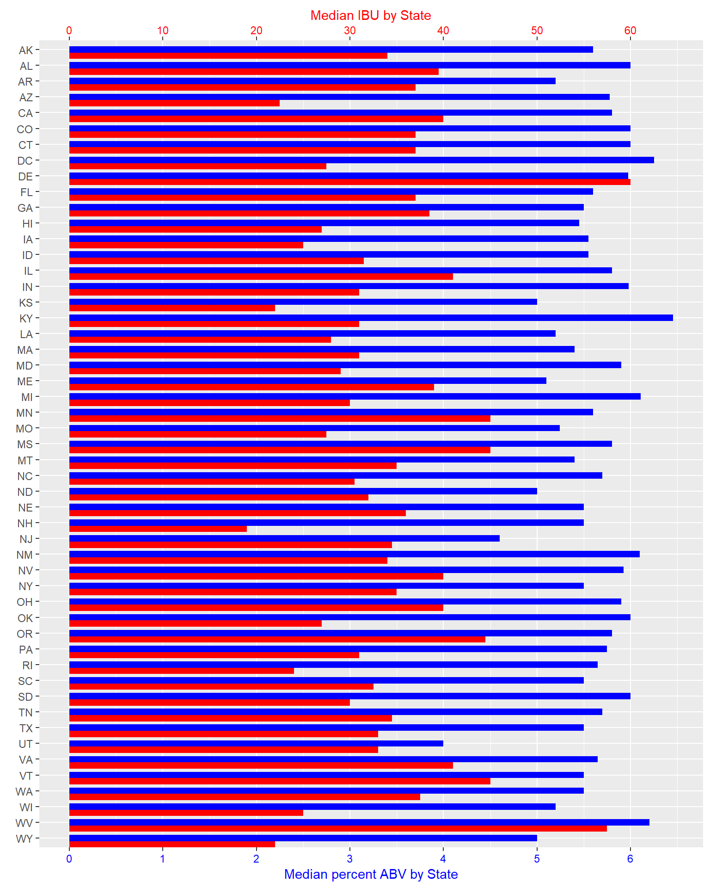
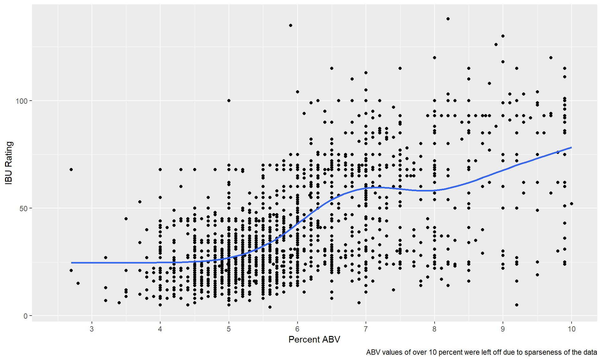
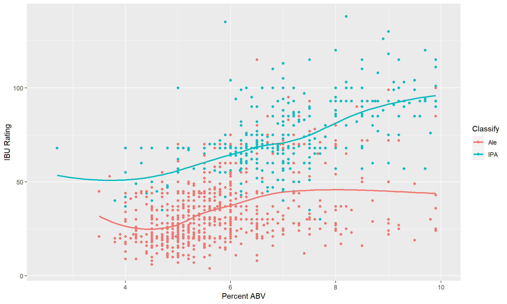
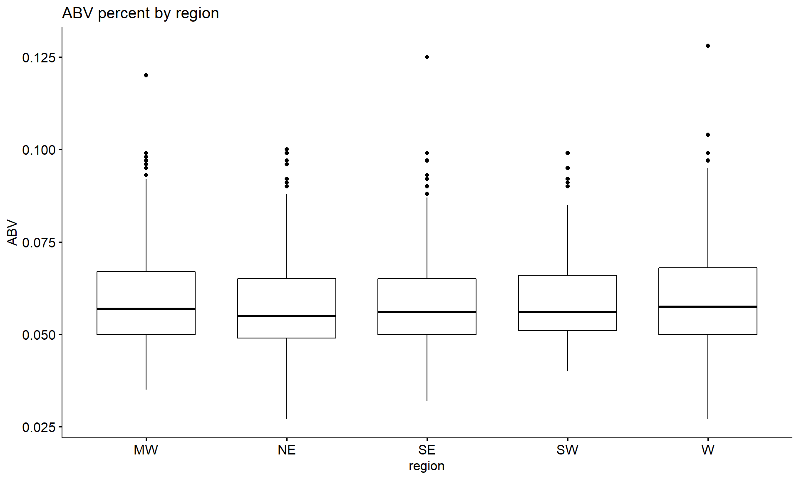
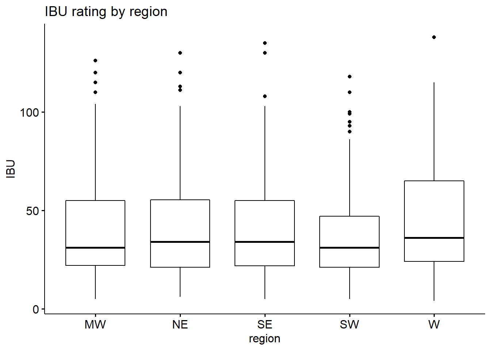
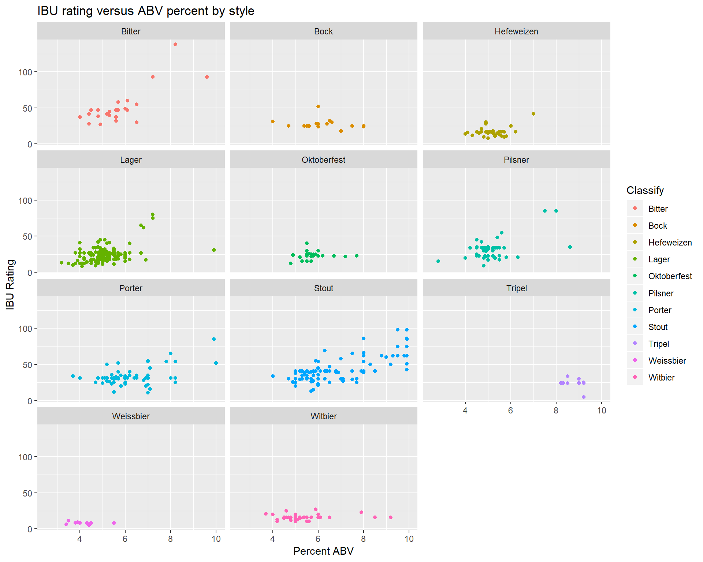

The data for this project was provided by officials from Budweiser brewing company
Two data files Beers and Breweries are used in this analysis
# Get raw data (Will Vary on Source Location)
Beers <- read.csv("C:\\Users\\Jeff Nguyen\\Desktop\\MSDS\\Data Science\\6306_Project1\\Beers.csv")
Breweries <- read.csv("C:\\Users\\Jeff Nguyen\\Desktop\\MSDS\\Data Science\\6306_Project1\\Breweries.csv")Data was examined for missing and duplicate values Cleaning data took the place in several steps
Two duplicate breweries were found, Summit Brewing Company of St Paul, MN and Sly Fox Brewing Company of Phoenxiville, PA. Beers related to one of the removed breweries were reassigned to the other brewery
# Fix duplicate Breweries, Just assign all Beers to one of the duplicates
#Breweries %>% filter(Breweries$Name=="Summit Brewing Company")
Beers[Beers$Brewery_id == 139,]$Brewery_id <- 59
#Breweries %>% filter(Breweries$Name=="Sly Fox Brewing Company")
Beers[Beers$Brewery_id == 164,]$Brewery_id <- 372
# Remove duplicate brewery
Breweries <- Breweries[!(Breweries$Brew_ID == 139 | Breweries$Brew_ID == 164),]Several beers were duplicated in the provided data. A unique set of beers was created. For the purposes of this analysis beer name and brewery id are assumed to be unique
UniqueBeers <- Beers %>% group_by(Name,Brewery_id) %>% summarize(minBeer_ID = min(Beer_ID)) %>% select(minBeer_ID)
Beers <- inner_join(Beers, UniqueBeers, by = c("Beer_ID" = "minBeer_ID")) %>%
select(Name = Name.x, Beer_ID, ABV, IBU, Brewery_id, Style, Ounces)Questions 1,3,4,5,6,7 answered below
BreweriesByState <- Breweries %>% select(State) %>% group_by(State) %>% count()
#head(BreweriesByState, 51)
firstBreweries = BreweriesByState[1:17,]
secondBreweries = BreweriesByState[18:34,]
thirdBreweries = BreweriesByState[35:51,]
BreweriesByStateWD <- cbind(firstBreweries,secondBreweries,thirdBreweries)
knitr::kable(BreweriesByStateWD,
format = "html",
caption = "Breweries by State",
col.names = c("State","Brewery Count","State","Brewery Count","State","Brewery Count")) %>%
column_spec(1:6, width = "1.1in") %>%
row_spec(1:17,align = "center") %>% kable_styling(bootstrap_options = c("hover"))| State | Brewery Count | State | Brewery Count | State | Brewery Count |
|---|---|---|---|---|---|
| AK | 7 | KY | 4 | NY | 16 |
| AL | 3 | LA | 5 | OH | 15 |
| AR | 2 | MA | 23 | OK | 6 |
| AZ | 11 | MD | 7 | OR | 29 |
| CA | 39 | ME | 9 | PA | 24 |
| CO | 47 | MI | 32 | RI | 5 |
| CT | 8 | MN | 11 | SC | 4 |
| DC | 1 | MO | 9 | SD | 1 |
| DE | 2 | MS | 2 | TN | 3 |
| FL | 15 | MT | 9 | TX | 28 |
| GA | 7 | NC | 19 | UT | 4 |
| HI | 4 | ND | 1 | VA | 16 |
| IA | 5 | NE | 5 | VT | 10 |
| ID | 5 | NH | 3 | WA | 23 |
| IL | 18 | NJ | 3 | WI | 20 |
| IN | 22 | NM | 4 | WV | 1 |
| KS | 3 | NV | 2 | WY | 4 |
62 beers are missing ABV content and 990 beers are missing IBU rating. Mean ABV and IBU data for beers computed by style will be substituted for the missing data
# Get tables of Mean ABV and IBU by Style. Use those values to replace NA data
ABVByStyle <- Beers %>%
dplyr::group_by(Style) %>%
dplyr::summarize(ABVStyle = mean(ABV, na.rm = TRUE)) %>%
select(Style, ABVStyle) IBUByStyle <- Beers %>%
dplyr::group_by(Style) %>%
dplyr::summarize(IBUStyle = as.integer(round(mean(IBU, na.rm = TRUE), 0))) %>%
select(Style, IBUStyle) BeerAndBreweryImproved <- BeerAndBrewery %>%
inner_join(ABVByStyle, by = "Style") %>%
inner_join(IBUByStyle, by = "Style") %>%
mutate(ABV = coalesce(ABV, ABVStyle)) %>%
mutate(IBU = coalesce(IBU, IBUStyle))After missing data was filled in 0 beers have missing ABU content and 51 beers are missing an IBU rating.
BeerAndBreweryImprovedByState <- BeerAndBreweryImproved %>%
dplyr::group_by(State) %>%
dplyr::summarize(StateABVMean = mean(ABV, na.rm = TRUE), StateABVMedian = median(ABV, na.rm = TRUE),
StateIBUMean = mean(IBU, na.rm = TRUE), StateIBUMedian = median(IBU, na.rm = TRUE),
StateBeerCount = n()) %>%
select(State, StateABVMean, StateABVMedian, StateIBUMean, StateIBUMedian, StateBeerCount)
BeerAndBreweryImprovedByState$StateABVMeanPercent <- BeerAndBreweryImprovedByState$StateABVMean * 100.0
BeerAndBreweryImprovedByState$StateABVMedianPercent <- BeerAndBreweryImprovedByState$StateABVMedian * 100.0scaleFactor = 0.1
ggplot(data = BeerAndBreweryImprovedByState, aes(x=State, width=.4)) +
geom_col(aes(y=StateABVMedianPercent), fill="blue") +
geom_col(aes(y=StateIBUMedian * scaleFactor), fill="red", position = position_nudge(x = -.4)) +
scale_y_continuous(name="Median percent ABV by State", breaks = c(0,1,2,3,4,5,6),
sec.axis=sec_axis(~./scaleFactor, name="Median IBU by State", breaks = c(0,10,20,30,40,50,60))) +
theme(
axis.title.x.top=element_text(color="red"),
axis.text.x.top=element_text(color="red"),
axis.title.x.bottom=element_text(color="blue"),
axis.text.x.bottom=element_text(color="blue")
) +
coord_flip() +
labs(x = element_blank()) +
scale_x_discrete(limits = rev(levels(BeerAndBreweryImprovedByState$State)))
Unsure of exactly what is being asked. Do we need the state with the highest median ABV and IBU respectively or the states with the beer that has the highest ABV and IBU. The question was worked both ways
BeerAndBreweryImprovedByState[which.max(BeerAndBreweryImprovedByState$StateABVMedian),] %>% select(State, StateABVMedianPercent)## # A tibble: 1 x 2
## State StateABVMedianPercent
## <fct> <dbl>
## 1 " KY" 6.45BeerAndBreweryImprovedByState[which.max(BeerAndBreweryImprovedByState$StateIBUMedian),] %>% select(State, StateIBUMedian)## # A tibble: 1 x 2
## State StateIBUMedian
## <fct> <dbl>
## 1 " DE" 60BeerAndBreweryImproved[which.max(BeerAndBreweryImproved$ABV),] %>% select(State, Name.x, Name.y, ABV)## State Name.x
## 373 CO Upslope Brewing Company
## Name.y ABV
## 373 Lee Hill Series Vol. 5 - Belgian Style Quadrupel Ale 0.128BeerAndBreweryImproved[which.max(BeerAndBreweryImproved$IBU),] %>% select(State, Name.x, Name.y, IBU)## State Name.x Name.y IBU
## 1790 OR Astoria Brewing Company Bitter Bitch Imperial IPA 138Most states have a median ABV for beers brewed of between five and six percent. Two states fall bellow that range UT and NJ, however NJ has only eight different flavors of beer being brewed in that state. Five states have a median ABV for beers brewed above six percent KY, DC, WV, NM, MI; however, DC and WV have less than ten different flavors of beer brewed in them.
The graph below shows the relationship between IBU and ABV, in general as IBU rating increase so does ABV percent. The only part of the graph that shows a flat line is with very weak beers, those having an alcohol content less than 5 percent. A plateau exists with beers near 7 percent ABV not changing in bitterness. Higher alcohol content beers, those over 8 percent, change bitterness but at a slower rate than that of beers from 5 to 6.5 percent ABV.
ggplot(data = BeerAndBreweryImproved, mapping = aes(x = ABV * 100, y = IBU)) +
geom_point(position = "dodge") + geom_smooth(se = FALSE) +
xlab("Percent ABV") + ylab("IBU Rating") +
scale_x_continuous(breaks = c(2,3,4,5,6,7,8,9,10), limits = c(2.5,10)) +
labs(caption = "ABV values of over 10 percent were left off due to sparseness of the data")
First step is classifying the beers as IPA or Ale
BeerAndBreweryImproved$Classify <- "Other"
IsAleBool <- str_detect(BeerAndBreweryImproved$Name.y, regex("\\bAle\\b", ignore_case = TRUE)) & #Ale is a word
str_detect(BeerAndBreweryImproved$Name.y, regex("\\bIPA\\b|India Pale Ale", ignore_case = TRUE), negate = TRUE) #But does not include IPA
IsIPABool <- str_detect(BeerAndBreweryImproved$Name.y, regex("\\bIPA\\b|India Pale Ale", ignore_case = TRUE))
BeerAndBreweryImproved[IsAleBool,]$Classify <- "Ale"
BeerAndBreweryImproved[IsIPABool,]$Classify <- "IPA"
# now add it for Style
IsAleBool <- str_detect(BeerAndBreweryImproved$Style, regex("\\bAle\\b", ignore_case = TRUE)) & #Ale is a word
str_detect(BeerAndBreweryImproved$Style, regex("\\bIPA\\b|India Pale Ale", ignore_case = TRUE), negate = TRUE) #But does not include IPA
IsIPABool <- str_detect(BeerAndBreweryImproved$Style, regex("\\bIPA\\b|India Pale Ale", ignore_case = TRUE))
BeerAndBreweryImproved[IsAleBool,]$Classify <- "Ale"
BeerAndBreweryImproved[IsIPABool,]$Classify <- "IPA"ggplot(data = BeerAndBreweryImproved[!BeerAndBreweryImproved$Classify == 'Other',],
mapping = aes(x = ABV * 100, y = IBU)) +
geom_point(position = "dodge", mapping = aes(color = Classify)) +
geom_smooth(se = FALSE, mapping = aes(color = Classify)) +
xlim(2.5, 10) + xlab("Percent ABV") + ylab("IBU Rating")
The IBU rating and ABV percentage data needs to be scaled and filtered before the kNN model is created
BeerAndBreweryImproved <- BeerAndBreweryImproved %>% filter(!is.na(IBU))
BeerAndBreweryImproved$zABV = scale(BeerAndBreweryImproved$ABV)
BeerAndBreweryImproved$zIBU = scale(BeerAndBreweryImproved$IBU)
BeerAndBreweryImproved2 = BeerAndBreweryImproved %>%
filter(Classify != 'Other')
splitPerc = .7The optimal “k” value for the model was calculated with the following code. The code takes 5 minutes to run so is set to not run by default (eval = FALSE), Change the eval parameter to “TRUE” to run the code block. The results of this code chunk indicates an optimal “k” value of 26 which results in a mean accuracy of 89.4%
set.seed(1)
iterations = 500
numks = 60
masterAcc = matrix(nrow = iterations, ncol = numks)
for(j in 1:iterations)
{
trainIndices = sample(1:dim(BeerAndBreweryImproved2)[1],round(splitPerc * dim(BeerAndBreweryImproved2)[1]))
train = BeerAndBreweryImproved2[trainIndices,]
test = BeerAndBreweryImproved2[-trainIndices,]
for(i in 1:numks)
{
classifications = knn(train[,c('zABV','zIBU')], test[,c('zABV','zIBU')], train$Classify, k = i)
table(classifications,test$Classify)
CM = confusionMatrix(table(classifications,test$Classify))
masterAcc[j,i] = CM$overall[1]
}
}
MeanAcc = colMeans(masterAcc)
plot(seq(1,numks,1),MeanAcc, type = "l", main = "Hyperparameter Optimization", xlab = "Number of k's", ylab = "Mean Accuracy")
which.max(MeanAcc)
max(MeanAcc)Ouput tables and confusion matrix
trainIndices = sample(1:dim(BeerAndBreweryImproved2)[1],round(splitPerc * dim(BeerAndBreweryImproved2)[1]))
BeerAndBreweryImprovedTrain2 = BeerAndBreweryImproved2[trainIndices,]
BeerAndBreweryImprovedTest2 = BeerAndBreweryImproved2[-trainIndices,]
BeerClassify <- knn(BeerAndBreweryImprovedTrain2[,c('zABV','zIBU')], BeerAndBreweryImprovedTest2[,c('zABV','zIBU')], BeerAndBreweryImprovedTrain2$Classify, k = 11, prob = TRUE)
#table(BeerClassify,BeerAndBreweryImprovedTest2$Classify)
cm <- confusionMatrix(table(BeerClassify,BeerAndBreweryImprovedTest2$Classify))
print(as.matrix(cm))## Ale IPA
## Ale 260 23
## IPA 27 153Five regions were created by grouping the states into them. An ANOVA(ANalysis Of VAriance) was performed by region. This test looks for statistically significant differences in IBU and ABV by region.
averageABV = BeerAndBreweryImproved %>%
group_by(State) %>%
summarize(ABV = mean(ABV), IBU = mean(IBU))
west = BeerAndBreweryImproved %>%
filter(str_trim(State, side = c("both")) %in% c('WA','OR','CA','NV','ID','MT','WY','CO','NM','AZ','UT','AL','HI')) %>%
mutate(region = 'W')
midwest = BeerAndBreweryImproved %>%
filter(str_trim(State, side = c("both")) %in% c('ND','SD', 'NE', 'KS','MN','IA','MO','WI','IL','IN','MI','OH')) %>%
mutate(region = 'MW')
southwest = BeerAndBreweryImproved %>%
filter(str_trim(State, side = c("both")) %in% c('AZ','NM','OK','TX')) %>%
mutate(region = 'SW')
southeast = BeerAndBreweryImproved %>%
filter(str_trim(State, side = c("both")) %in% c('AK','LA','MA','AL','TN','KY','GA','WV','VA','NC','SC','FL')) %>%
mutate(region = 'SE')
northeast = BeerAndBreweryImproved %>%
filter(str_trim(State, side = c("both")) %in% c('ME','NH','VT','MA','CT','RI','NJ','NY','PA')) %>%
mutate(region = 'NE')
USregions = rbind(west,midwest,southwest,southeast,northeast)
USregions$region = as.factor(USregions$region)While the mean alcohol content does vary by region the results of comparing region by region fall short of a statisticall significant.
ggboxplot(USregions, x = "region", y = "ABV",
ylab = "ABV", xlab = "region") + ggtitle("ABV percent by region")
abvModel = aov(ABV~region, data = USregions)
abvTukey = TukeyHSD(abvModel)
abvpvals <- abvTukey$region[,4]Four relation ships come near to 95% siginifigance NE-MW, W-NE, SE-MW, W-SE
sort(abvpvals)## NE-MW SE-MW W-NE W-SE SW-SE SW-NE
## 0.06025936 0.06241135 0.07647672 0.07907995 0.65705075 0.66826751
## SW-MW W-SW W-MW SE-NE
## 0.95396015 0.97684239 0.99961621 0.99999940While the mean alcohol content does vary by region the results of comparing region by region fall short of a statisticall significant.
ggboxplot(USregions, x = "region", y = "IBU",
ylab = "IBU", xlab = "region") + ggtitle("IBU rating by region")
IBUModel = aov(IBU~region, data = USregions)
ibuTukey <- TukeyHSD(IBUModel)
ibupvals <- ibuTukey$region[,4]The difference in IBU rating between the “W” and “MW” regions is statistically significantly p-Value = 0.0127
sort(ibupvals)## W-MW W-SW W-SE W-NE SW-NE SW-SE
## 0.01374398 0.09722614 0.12819134 0.16492768 0.97654558 0.99072462
## NE-MW SW-MW SE-MW SE-NE
## 0.99615143 0.99690581 0.99966704 0.99990640Here we see beers IBU rating versus ABV percent for each style. Style was determined by examing beer names and styles for key words.
styles = c("Lager","Pilsner","Stout","Porter","Weissbier","Bock","Bitter","Hefeweizen","Oktoberfest","Tripel","Witbier")
for(i in 1:length(styles)){
style = str_trim(styles[i], side = c("both"))
styleRegex = paste("\\b", style, "\\b", sep="")
# Name
IsStyleBoolName <- str_detect(BeerAndBreweryImproved$Name.y, regex(styleRegex, ignore_case = TRUE))
#BeerAndBreweryImproved[IsStyleBool,]$Classify <- style
# Style
IsStyleBoolStyle <- str_detect(BeerAndBreweryImproved$Style, regex(styleRegex, ignore_case = TRUE))
BeerAndBreweryImproved[IsStyleBoolName|IsStyleBoolStyle,]$Classify <- style
}
#scatter plot
BeerAndBreweryImproved %>% filter(Classify != "Other" & Classify != "Ale" & Classify != "IPA") %>%
ggplot(mapping = aes(x = ABV * 100, y = IBU)) +
geom_point(position = "dodge", mapping = aes(color = Classify)) + facet_wrap(vars(Classify), ncol = 3) +
ggtitle("IBU rating versus ABV percent by style") +
xlim(2.5, 10) + xlab("Percent ABV") + ylab("IBU Rating")
The plots above are for styles that had a significant population of beers and had not been previously examined
Removing duplicates and imputing NA values were important for us to provide a more accurate analysis. Not doing so could potentially provide analysis and models that were not as accurate. When performing exploratory data analysis, looking at average ABV percent or IBU rating by state alone can be misleading due to small number of beers in some states. It is important to apply a statistical procedure to see if there actually is a difference.
For classification purposes, the kNN model was used to separate Ales from IPAs with a high degree of accuracy, specificity, sensitivity, recall, and precision. When combined with other data sources like market segmentation or sales, this model could potentially be used to help identify ale or IPA preferences in a region.
We choose to perform an ANOVA to see if there was a difference between geographic regions in the United States based on ABV and IBUs for Ales and IPAs. The output from the ANOVAs and Tukey HSD post hoc test show that the western region of the United States prefers beer that has a higher IBU rating; and that Alcohol content as measured by ABV percent does not show a statistically significant difference across regions. Style data can also be used to group current IBU rating and ABV percent of available beers. This information is useful in generating profiles based on IBU and ABV that may be useful in identifying and grouping different beer styles in the future.
For an interactive app featuring EDA for this project please visit: https://7446nguyen.shinyapps.io/portfolio/